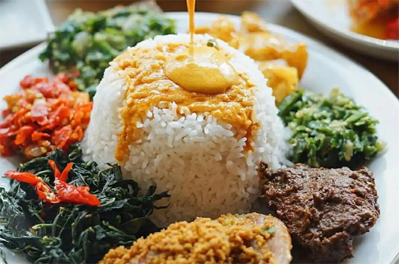
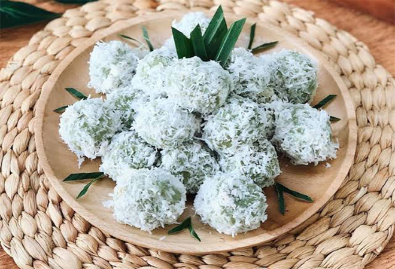

MAKANAN
1. Makanan Berat
Nasi Padang

Resep Nasi Padang Rendang :
Bahan-Bahan :
- 500 gram daging sapi yang dipotong-potong persegi
- 20 gram cabai rawit
- 6 buah bawang merah
- 3 siung bawang putih
- 3 butir kemiri
- 4 gelas santan kental
- 2 ruas lengkuas yang dimemarkan
- 2 sendok teh garam
- 1 sendok teh asam kandis
- 1 lembar daun kunyit
- 1 lembar daun jeruk
- 1 batang serai yang dimemarkan
- 1 ruas jari jahe
- 1/2 sendok teh bubuk kunyit
Cara Membuat :
- Haluskan cabai rawit, bawang putih, merah, bubuk kunyit, kemiri, dan jahe secara bersamaan.
- Tambahkan daging, santan, bumbu halus, asam kandis, serai, daun jeruk, dan kunyit ke dalam panci yang sudah berisi air mendidih. Aduk hingga merata.
- Nyalakan api, masak api sedang dan harus diaduk terus. Ketika sudah mendidih, tambahkan garam, lalu aduk lagi tanpa berhenti.
- Masak rendang hingga santannya meresap ke daging. Dengan begitu, daging akan lembut.
2. Makanan Ringan
Klepon

Resep Klepon :
Bahan-Bahan :
- 300 gram tepung ketan
- 1 ½ sdm air daun pandan suji
- 1 sdt air kapur sirih ½ sdt garam
- ½ sdt garam
- 200 ml air matang
- 200 gram kelapa parut kasar, kukus
- 200 gram gula merah, serut halus
Cara Membuat :
- Campurkan tepung ketan dengan air daun pandan, kapur sirih, dan garam, aduk rata.
- Tambahkan air sedikit-sedikit hingga adonan bisa dipulung. Diamkan selama 10 menit.
- Ambil sejumput adonan, pipihkan, beri gula merah serut, bulatkan dan rapatkan.
- Rebus air dalam panci hingga mendidih. Setelah itu, masukkan bola ketan, masak hingga bola-bola klepon mengapung. Angkat dan tiriskan.
- Gulingkan bola ketan dalam kelapa parut. Sajikan dalam takir mini atau sudi dari daun pisang. Nikmati klepon ketan isi gula merah yang kenyal ini.
MINUMAN
Jus Mangga
Resep Jus Mangga :
Bahan-Bahan :
- 2 buah mangga (pastikan buah mangga sudah matang)
- 2 sdm gula pasir
- Susu kental manis (secukupnya)
- Air putih (secukupnya)
- Es batu atau es serut (sesuai selera)
Cara Membuat :
- Kupas buah mangga lalu cuci dengan air bersih. Potong daging buah mangga sesuai selera.
- Jika buah mangga sudah dipotong kecil-kecil, haluskan dengan blender bersama air.
- Tambahkan gula, susu kental manis dan sedikit es ke dalam blender. Haluskan hingga daging buah mangga benar-benar halus.
- Jika buah mangga sudah halus, saring buah mangga dan sajikan di gelas saji.
- Tambahkan es batu ke dalam gelas dan tambahkan pula susu di atasnya.
- Jus mangga siap untuk disajikan dan dinikmati bersama keluarga tercinta.